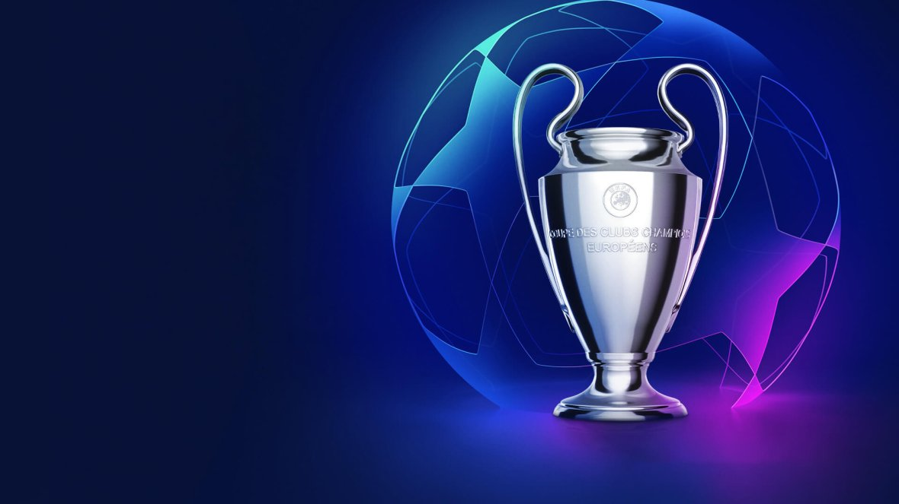

Vitajte vo svete, kde jeden okamih dokáže vyvolať neopísateľnú radosť aj zimomriavky. Futbal nie je len hra – je to vášeň, ktorá spája milióny ľudí po celom svete, búra hranice a píše nezabudnuteľné príbehy.
Či už ste skalný fanúšik, aktívny hráč,
alebo si len radi pozriete dobrý zápas cez víkend,
ste na správnom mieste.
Nájdete tu všetko, čo robí
tento šport najkrajšou hrou na svete: od fascinujúcej
histórie a profilov legendárnych hráčov, cez analýzy
najväčších zápasov, až po horúce novinky zo sveta
zelených trávnikov.
Obujte si kopačky, vstúpte na ihrisko a prežite s nami kúzlo futbalu naplno!
